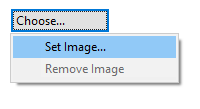

在画布视图中，您可以将桌面上的图片文件拖放到画布。
在画布视图中，您可以将桌面上的图片文件拖放到画布。ArchiMate对象、画布块、图片对象和便利贴可以包含图像。 块和便利贴中的图像是图标，并调整为最大宽度和高度为100像素。图像可以是任意大小，但我们建议您将它们保持在合理的小范围内，以免消耗太多资源。
要将图像添加到这些对象之一，请打开“属性”窗口并选择该对象。双击该对象也将打开“属性”窗口。在“属性”窗口中找到“图像”选项卡，然后使用“图像选择...”按钮选择图像选择器：
从属性窗口中选择图像选择器
注意 - 要为ArchiMate对象设置图像，您必须首先确保在图像来源下拉列表中选择“自定义”。
这将打开“我的图像”图像选择器对话窗口：

图像选择器对话窗口
任何加载的模型中包含的所有图像都会显示在选择器中，以便您可以重复使用它们。如果您想从计算机打开图像文件，请选择“从文件打开...”选项。
在画布视图中，您可以将桌面上的图片文件拖放到画布。Archi 对“*.archimate”文件使用不同的文件格式添加图像时。
通常 Archi 将“*.archimate”文件保存为单个纯文本XML格式文件。但是，当使用图像时，使用的文件格式是二进制存档文件（zip格式），其中包含模型的XML文件和图像文件。这是为了将所有相关文件放在一起。
从对象中删除图像
要从对象中删除图像，请从图像选择器中选择“删除图像”选项。